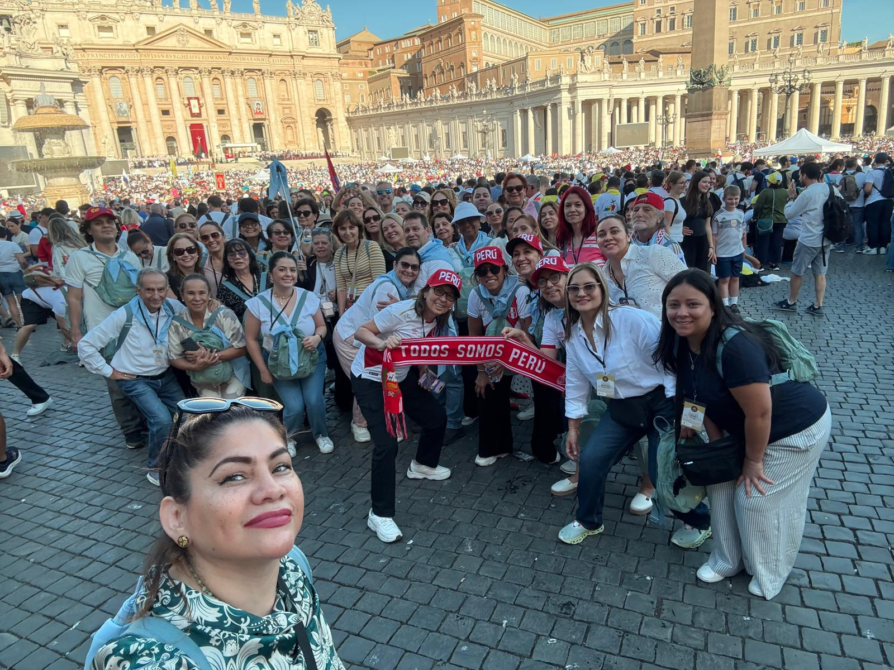
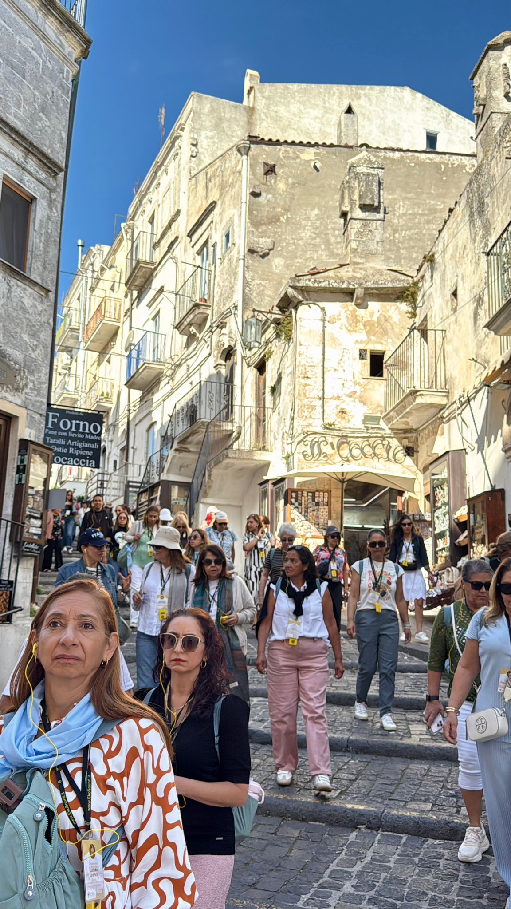
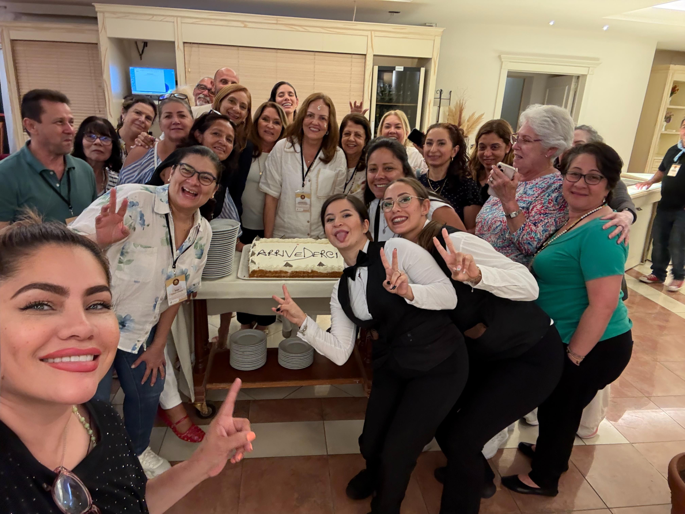
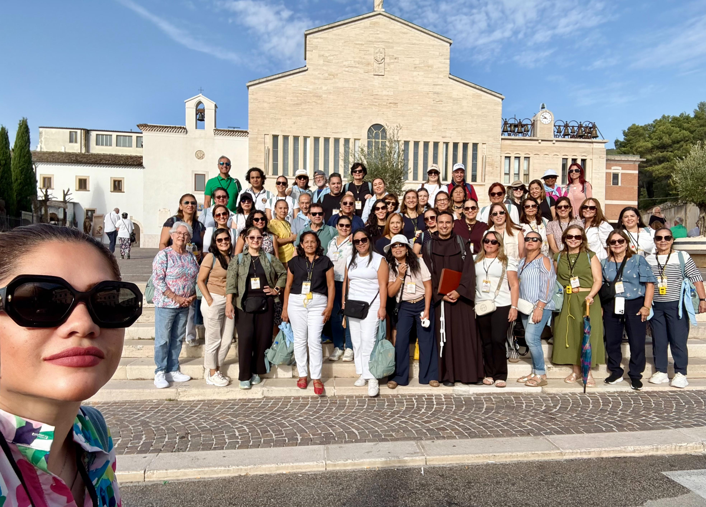
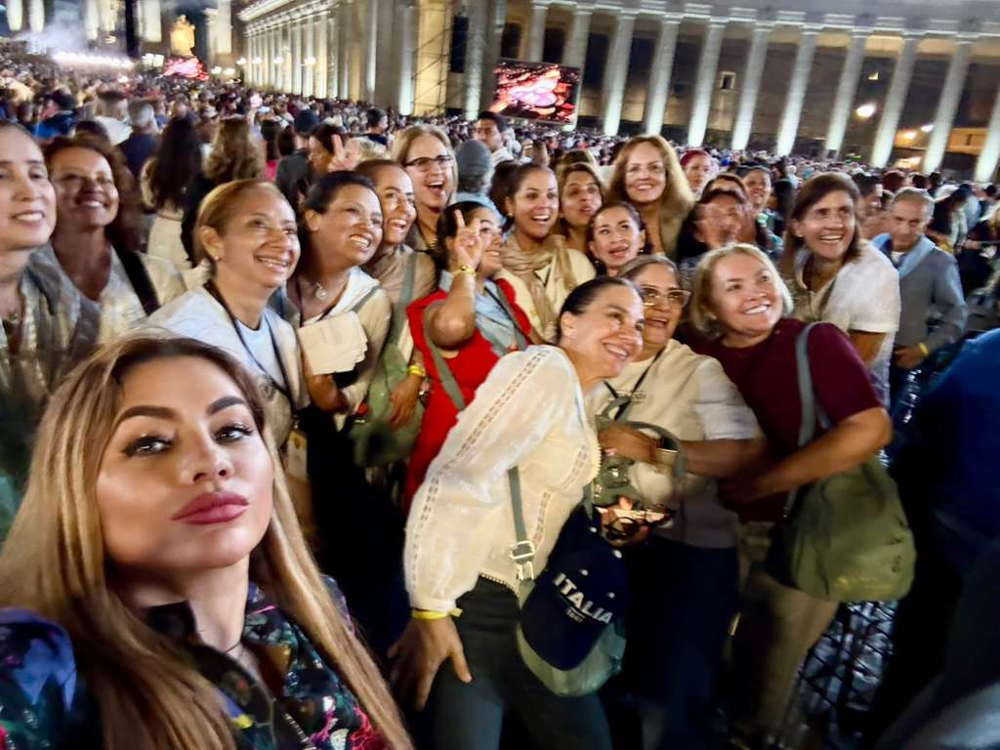
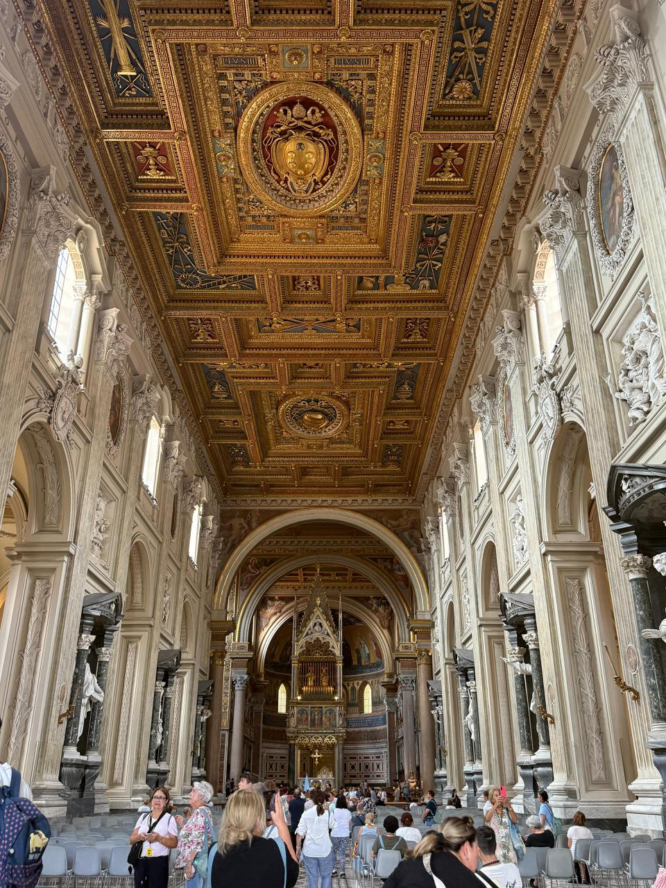
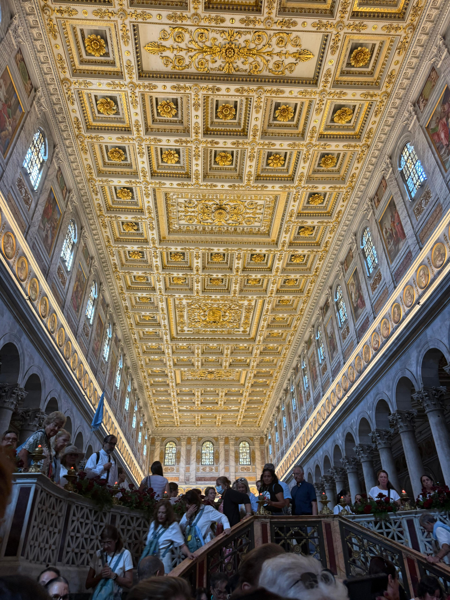

← Volver a Todas las Experiencias
Peregrinación al Jubileo 2025 en Roma
Del 5 al 16 de septiembre de 2025, nos embarcamos en una peregrinación a Italia llena de gracia y esperanza, recorriendo algunos de los santuarios más significativos del país. Durante estos 12 días, vivimos experiencias espirituales profundas en Roma, San Giovanni Rotondo, Asís y Loreto, siguiendo los pasos de santos que marcaron la historia de la fe.
Momentos Históricos
Nuestra travesía comenzó en Roma, corazón de la Iglesia, donde fuimos testigos de un momento histórico: la canonización del beato Carlo Acutis y Pier Giorgio Frassati en la Plaza de San Pedro. Desde allí, viajamos a San Giovanni Rotondo para encontrarnos con la vida y legado del Padre Pío, visitando los lugares donde celebró la Eucaristía, confesó y donde reposan sus restos incorruptos, en un ambiente de oración, adoración y recogimiento.
Santuarios Visitados
En Asís, cuna de San Francisco, Santa Clara y Santo Carlo Acutis, nos sumergimos en la espiritualidad franciscana, recorriendo sus basílicas y participando en retiros que nos invitan a redescubrir la sencillez y la entrega. Continuamos hacia Loreto, donde la Santa Casa nos recordó la presencia viva de María, acompañándonos en momentos de oración comunitaria y silencio interior.
Experiencia Jubilar
Finalmente, regresamos a Roma para pasar por las Puertas Santas de las Basílicas Mayores—San Pedro, San Juan de Letrán, Santa María la Mayor y San Pablo Extramuros—y participar en celebraciones litúrgicas con el Santo Padre durante el Jubileo de la Consolación. Cada día fue una oportunidad de encuentro con Dios, con nosotros mismos y con la comunidad de peregrinos que comparte la misma fe y esperanza.
¿Desea Saber las Próximas Fechas?
Contáctenos directamente por WhatsApp para conocer los nuevos destinos y salidas.

Canonización de Carlo Acutis
Canonización de Carlo Acutis en la Plaza de San Pedro en Ciudad del Vaticano, Roma - Peregrinación 2025

Canonización de Carlo Acutis
Peregrinos en la Canonización de Carlo Acutis en la Plaza de San Pedro en Ciudad del Vaticano, Roma - Peregrinación 2025

Monte San Angelo
Peregrinos en el Monte San Angelo en Italia - Peregrinación 2025

Santuario de San Miguel
Santuario de San Miguel Arcángel en Monte Gargano en Italia - Peregrinación 2025

Plaza de San Pedro
Peregrinos en la Canonización de Carlo Acutis en la Plaza de San Pedro en Ciudad del Vaticano, Roma - Peregrinación 2025

San Angelo
Peregrinas recorriendo San Angelo en Italia - Peregrinación 2025

St Giovanni Rotondo
Celebración de cumpleaños en St Giovanni Rotondo en Italia - Peregrinación 2025

St Giovanni Rotondo
Peregrinos en el Santuario de San Pio de Pietrelcina en San Giovanni Rotondo en Italia - Peregrinación 2025

Asis
Celebración de la Eucaristía en Parroquia Santa María La Mayor en Asís en Italia - Peregrinación 2025

Asis
Peregrinos en la Iglesia de La Porciúncula en Asís en Italia - Peregrinación 2025

Plaza de San Pedro
Peregrinos en el Concierto Grace for the World en la Plaza de San Pedro en Ciudad del Vaticano, Roma - Peregrinación 2025

Jubileo de la Consolación
Santo Padre León XIV en el Jubileo de la Consolación en la Basílica de San Pedro en Ciudad del Vaticano, Roma - Peregrinación 2025

Plaza San Pedro - Puerta Santa
Plaza San Pedro camino a la Puerta Santa en Ciudad del Vaticano, Roma - Peregrinación 2025

Plaza San Pedro - Puerta Santa
Puerta Santa frente a la Basílica de San Pedro en Ciudad del Vaticano, Roma - Peregrinación 2025

Camino a St Giovanni Rotondo
Peregrinos rumbo a St Giovanni Rotondo, Italia - Peregrinación 2025

Plaza de San Pedro
Peregrinos en el Jubileo de la Consolación en la Plaza de San Pedro en Ciudad del Vaticano, Roma - Peregrinación 2025

Puerta Santa San Juan de Letrán
Puerta Santa San Juan de Letrán en Roma, Italia - Peregrinación 2025

Puerta Santa San Juan de Letrán
Puerta Santa San Juan de Letrán en Roma, Italia - Peregrinación 2025

Puerta Santa San Pablo de Extramuros
Puerta Santa San Pablo de Extramuros en Roma, Italia - Peregrinación 2025

Puerta Santa San Pablo de Extramuros
De Pedro a Francisco, los 266 del Pontificado en la Puerta Santa San Pablo de Extramuros en Roma, Italia - Peregrinación 2025